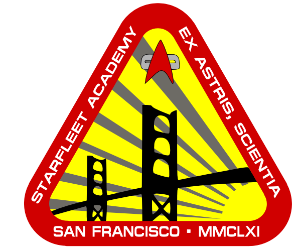

This is a system created for the Star Trek: The Role-Playing Game (FASA). It gives players more freedom during character creation.
In the rule book it mentioned some characters could have gone to university before they entered Starfleet Academy. I became fascinated with this because it said supplements were coming with rules. Those never appeared, so I created my own system to allow characters to attend university.
WARNING TO THE GM: There is much power here for players to become drunk with. Don't allow players to go crazy. Use common sense and a few rules to keep characters from becoming all powerful.
Rules:
The most common characters that would have attended university are Engineers, Science Officers, Ship's Counselors and Medical Officers. For other characters it would be rare, but if the player can think of a good background story by all means let them be creative.
The university system considered to be a four year doctorate that is pursued prior to the characters entrance into Starfleet. So, any character who has attended university will be 22 when they enter Starfleet.
A player can choose whatever university and program they wish.
The following are just a few of the universities a character can attend. Use the base system to create your own (or just change the name). I'll be posting a Betazoid university soon.
Universities
Astronautics University of Edinburgh
Gen Eds
Computer Operation 20
Artistic Expression 15
Language 15
General Philosophy 10
Electronics Tech 10
Computer Tech 10
Mathematics 20
Mechanical Engineering OR Computer Science 20
Five Outside Electives 10 (Must be new skills)
Player must choose ONE Track
Engineering Track
Two Related Majors 40 (Any Engineering related Skills OR Space Sciences)
Two Related Minors 20 (Any Engineering related Skills OR Physical Sciences)
Two Other Fields at 10 (Any Engineering related Skills OR Physical Sciences)
Divide 30 between any Two “Technology” Skills
Science Track
Two Related Majors 40 (Any Space Sciences OR Physical Sciences)
Two Related Minors 20 (Any Space Sciences OR Physical Sciences)
Two Other Fields at 10 (Any Space Sciences OR Physical Sciences)
Small Equipment System Operation 20
Small Equipment System Tech 10
Both Tracks receive Advanced Study
Advanced Training INT/10 round down 1d10 (Must be a skill already be possessed)
Vulcan Science Academy
(Non-Vulcans can attend, but must put all 15 of language into Vulcan)
Gen Eds
Computer Operation 20
Artistic Expression 15 (At least five of the 15 must be in the Vulcan Lyre)
Language 15
General Philosophy 10
Computer Science 10
Investigation: Research 20
Vulcan Culture/History 15
Vulcan Law 15
Five Outside Electives 10
Program
Two Related Majors 40 (Any Sciences expect Social)
Two Related Minors 20 (Any Sciences expect Social)
Two Other Fields at 10 (Any Sciences expect Social)
Small Equipment System Operation 20
Small Equipment System Tech 10
Advanced Study
Advanced Training INT/10 round down 1d10 (Must be a skill already be possessed)
Zakdorn University of Tactics and Strategy
(Non- Zakdorns can attend, but must put all 15 of language in Zardorn.)
Gen Eds
Computer Operation 20
Artistic Expression 15
Language 15
General Philosophy 10
Gaming: 3-D Chess 10
Gaming: Strategema 20
Instruction 10
Leadership 20
Five Outside Electives 10 (Must be new skills)
Program
Two Related Majors 40 (Any Combat S/T OR Neg/Dip OR Any Gaming OR I-P Relations)
Two Related Minors 20 (Any Combat S/T OR Neg/Dip OR Instruction OR Any Gaming OR I-P Relations)
Two Other Fields at 10 (Any Combat S/T OR Neg/Dip OR Instruction OR Any Gaming OR I-P Relations)
Economics OR Political Science OR Law 20
Any Trivia OR Any Culture/History OR Psychology 10
Advanced Study
Advanced Training INT/10 round down 1d10 (Must be a skill already possessed)
The University of New Paris
Gen Eds
Computer Operation 20
Artistic Expression 15
Language 15
General Philosophy 10
Great Galactic Literature 20
Great Galactic Music 20
Any Two Culture/History Skills 10
Five Outside Electives 10
Player must choose ONE School
School of Science
Two Related Majors 40 (Any Sciences expect Medical and Social)
Two Related Minors 20 (Any Sciences expect Medical and Social)
Two Other Fields at 10 (Any Sciences expect Medical and Social
Small Equipment System Operation 10
Investigation: Research 20
School of Medicine
Two Related Majors 40 (Any Medical Sciences)
Two Related Minors 20 (Any Medical Sciences OR Life Sciences)
Two Other Fields at 10 (Any Medical Sciences OR Life Sciences)
Small Equipment System Operation 10
Investigation: Forensics 20
School of Diplomacy
Negotiation/Diplomacy 40
Inter-Planetary Relations OR Political Science OR Law 40
Two Related Minors 20 (Any Social Sciences OR Trade and Commerce)
Two Other Fields at 10 (Any Social Sciences OR Trivia OR Language)
Administration 20
Value Estimation 10
School of Law
Federation Law 40
Negotiation/Diplomacy OR Inter-Planetary Relations OR Political Science OR Economics 40
Two Related Minors 20 (Any Social Sciences OR Trade and Commerce)
Two Other Fields at 10 (Any Social Sciences OR Trivia)
Administration 20
Investigation: Research 10
School of Mining
Mining 40
Geology OR Metallurgy 40
Two Related Minors 20 (Any Physical OR Planetary Sciences OR Trade and Commerce OR Economics)
Two Other Fields at 10 (Any Social Sciences OR Trivia)
Mining System Ops 20
Mining System Tech 10
School of Criminal Justice
Federation Law OR Security Procedures 40
Investigation: Criminal 40
Two Related Minors 20 (Investigation: Forensics OR Interrogation OR Psychology OR Social Science)
Two Other Fields at 10 (Investigation: Forensics OR Interrogation OR Psychology OR Social Science)
Holodeck Interrogation 10
Surveillance 20
School of Archeology
Archeology 40
Anthropology OR Sociology 40
Two Related Minors 20 (Any Social Sciences OR Trivia OR Language)
Two Other Fields at 10 (Any Social Sciences OR Trivia OR Language)
Geology OR Exobiology OR Any Trivia 10
Investigation: Research 20
School of Language
Two Language Majors 40 (Any Language OR Cryptology)
Two Language Minors 20 (Any Language OR Cryptology)
Two Other Fields at 10 (Any Language OR Cryptology)
Communication System Ops 10
Any Culture/History OR Psychology 20
School of Economics
Economics 40
Trade and Commerce OR Inter-Planetary Relations OR Political Science OR Law 40
Two Related Minors 20 (Any Social Sciences OR Trade and Commerce)
Two Other Fields at 10 (Any Social Sciences OR Trivia)
Accounting 10
Value Estimation 20
School of Arts
Two Majors 40 (Any Artistic Expression)
Two Minors 20 (Any Artistic Expression OR Trivia)
Two Other Fields at 10 (Any Artistic Expression OR Trivia)
Instruction 20
Any Trivia OR Language 10
School of Interdisciplinary Studies
(Player must work with GM to create this program by combining two of the above Schools)
Two Unrelated Majors 40
Two Unrelated Minors 20
Two Other Unrelated Fields at 10
Divide 30 between two other skills
All Programs receive Advanced Study
Advanced Training INT/10 round down 1d10 (Must be a skill already be possessed)